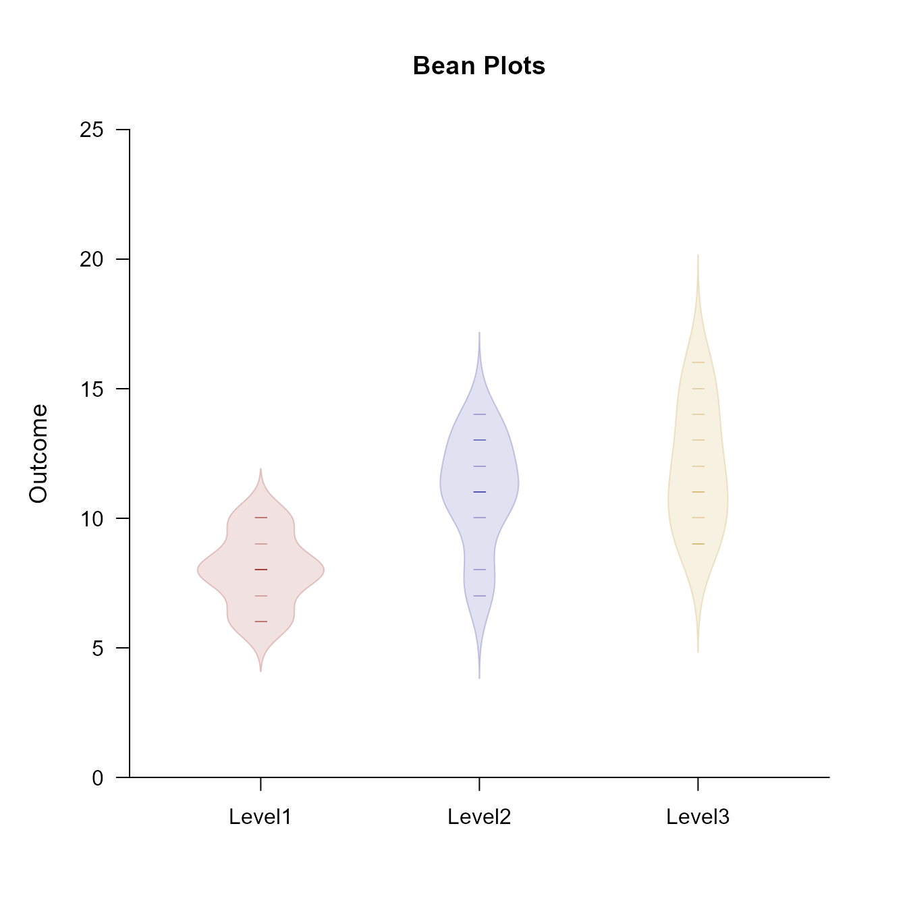
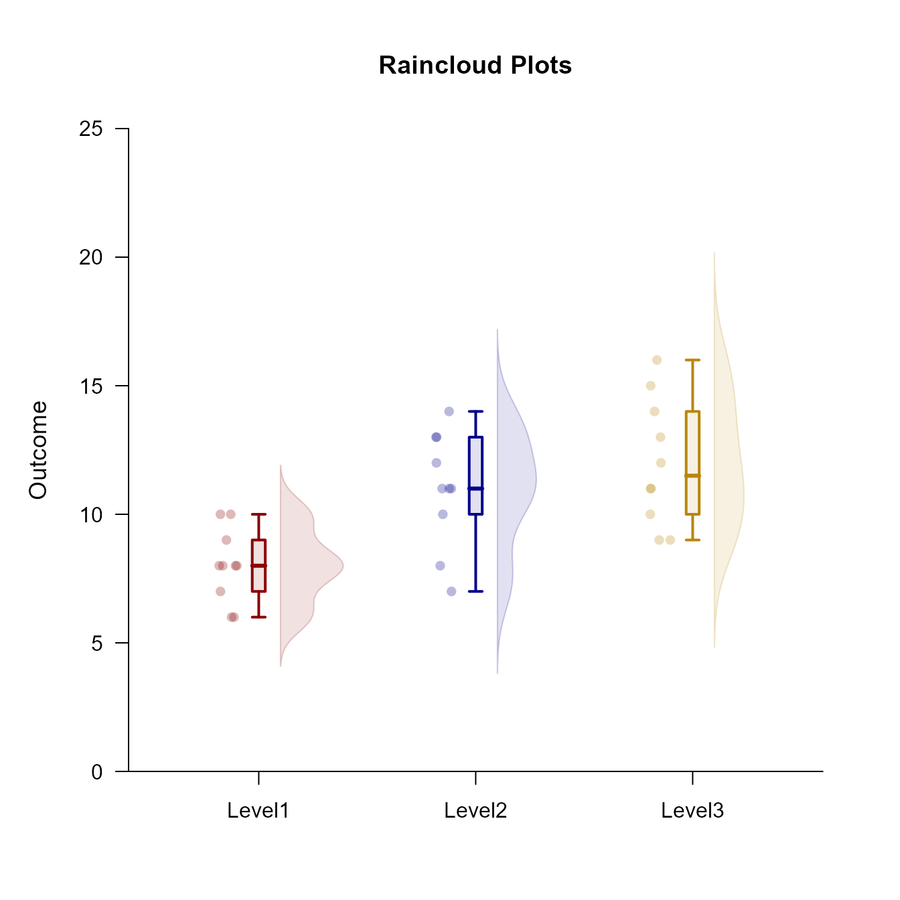

This page examines a single-factor between-subjects (one-way) design using raw data input, focusing on exploratory data analyses.
Preliminary Tasks
Summary Statistics
For reference, this code obtains the boxplot statistics for the data frame.
(Outcome ~ Factor) |> describeBoxes()
Boxes for the Data
LW LH Mdn UH UW
Level1 6.000 7.000 8.000 9.000 10.000
Level2 7.000 10.000 11.000 13.000 14.000
Level3 9.000 10.000 11.500 14.000 16.000This code obtains the typical descriptive statistics for the data frame.
(Outcome ~ Factor) |> describeMoments()
Summary Statistics for the Data
N M SD Skew Kurt
Level1 10.000 8.000 1.414 0.000 -0.738
Level2 10.000 11.000 2.211 -0.617 -0.212
Level3 10.000 12.000 2.449 0.340 -1.102Building Layered Plots
Plotting data points is often a first step in exploring data.
(Outcome ~ Factor) |> plotData(offset = 0, method = "swarm")To make the plots more informative, it is often desirable to layer multiple elements on the same plot. This can be done in a couple of ways.
Using Separate Calls
The typical way to build a plot is to use separate calls for each plotting elements (e.g., data, boxplots) and using the “add” argument to put them on the same plot.
This can be simplified by using an “add” version of the function call instead of using the longer “add” argument for the function call. Note that additional arguments can be used to alter the plots.
Using Passthrough Capabilities
Rather than separate lines for function calls, all plotting elements have passthrough capabilities that allow the them to be placed on the same line. Note that additional arguments can still be used.
As a second example, plot the frequency distributions as histograms and add the summary statistics. The bars represent standard deviations, with dotted lines as the default but solid lines representing the sides with more skew.
(Outcome ~ Factor) |> plotFrequencies(main = "Frequencies and Summary Statistics for the Data") |> addMoments()Common Layered Plots
Some forms of exploratory plots are very common (e.g., violin plots, bean plots, and raincloud plots). Though they could each be built using the methods above, specific functions for these are built into EASI.
Violin Plots
Build violin plots using multiple basic plot calls.
(Outcome ~ Factor) |> plotDensity(offset = 0, type = "full", main = "Violin Plots")
(Outcome ~ Factor) |> plotBoxes(add = TRUE, values = FALSE)Obtain violin plots using one call.
(Outcome ~ Factor) |> plotViolins()Bean Plots
Build bean plots using multiple basic plot calls.
(Outcome ~ Factor) |> plotDensity(type = "full", offset = 0, main = "Bean Plots")
(Outcome ~ Factor) |> plotData(add = TRUE, offset = 0, pch = 95, method = "overplot")Obtain bean plots using one call.
(Outcome ~ Factor) |> plotBeans()
Raincloud Plots
Build raincloud plots using multiple basic plot calls.
(Outcome ~ Factor) |> plotDensity(main = "Raincloud Plots", offset = .1)
(Outcome ~ Factor) |> plotBoxes(add = TRUE, values = FALSE)
(Outcome ~ Factor) |> plotData(add = TRUE, method = "jitter", offset = -.15)Obtain raincloud plots using one call.
(Outcome ~ Factor) |> plotRainclouds()